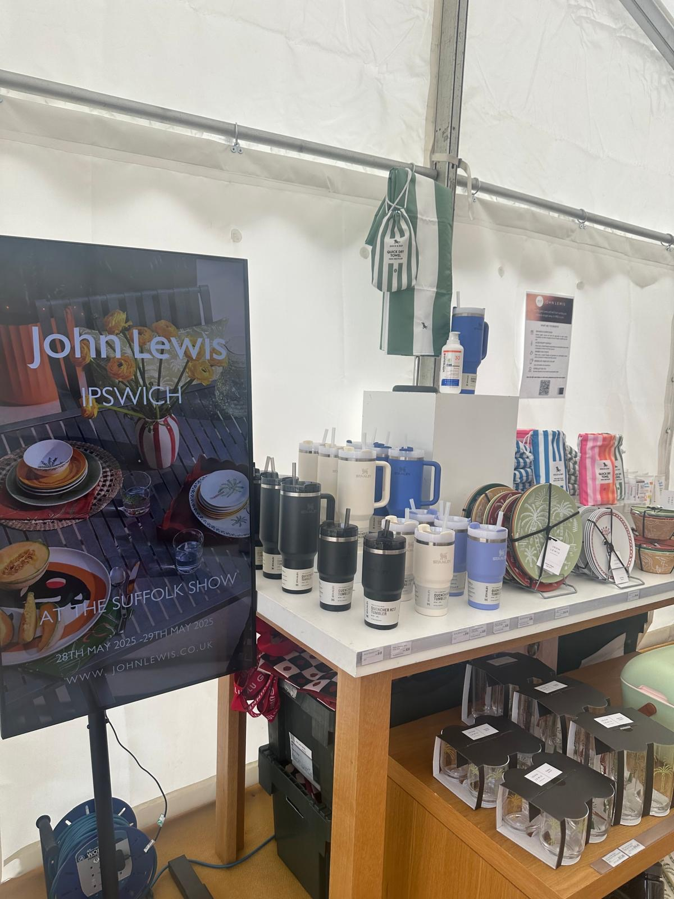
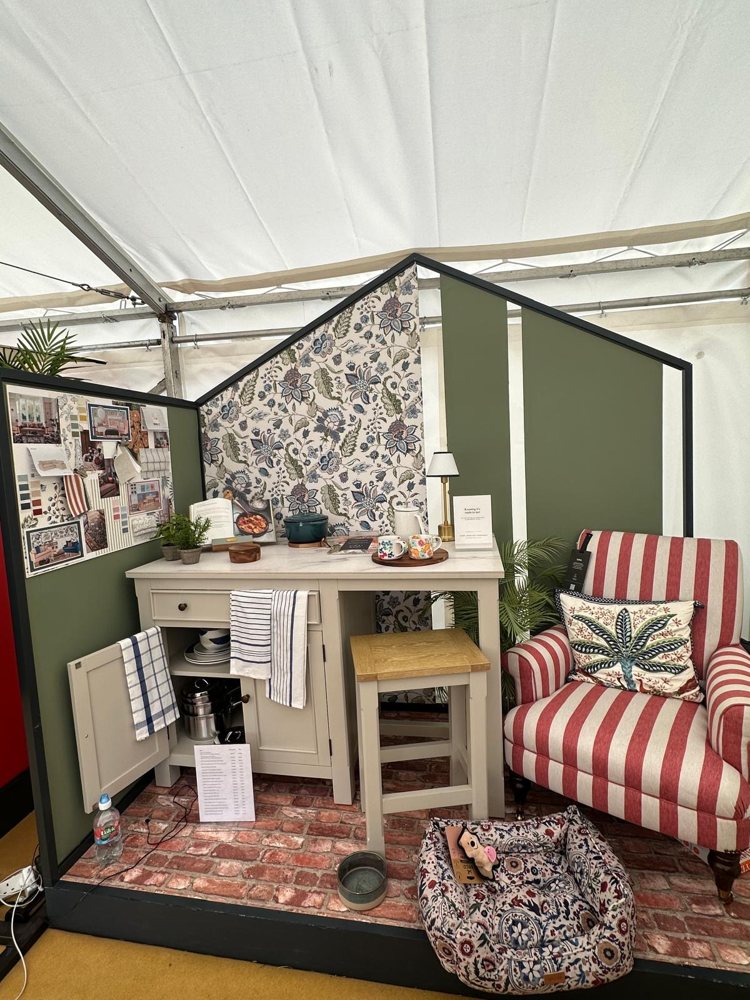
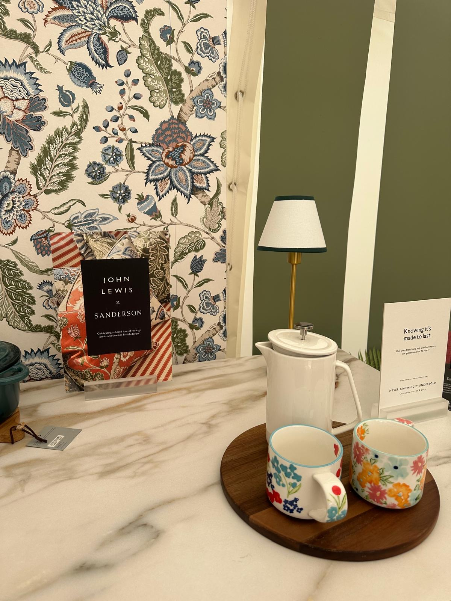
28–29 May 2025 · Suffolk County Showground
The Suffolk Show
John Lewis Ipswich pop-up at the Suffolk County Show, coordinating the brand stand, product display, home interiors showcase featuring the JL × Sanderson collaboration, and the My John Lewis loyalty activation.
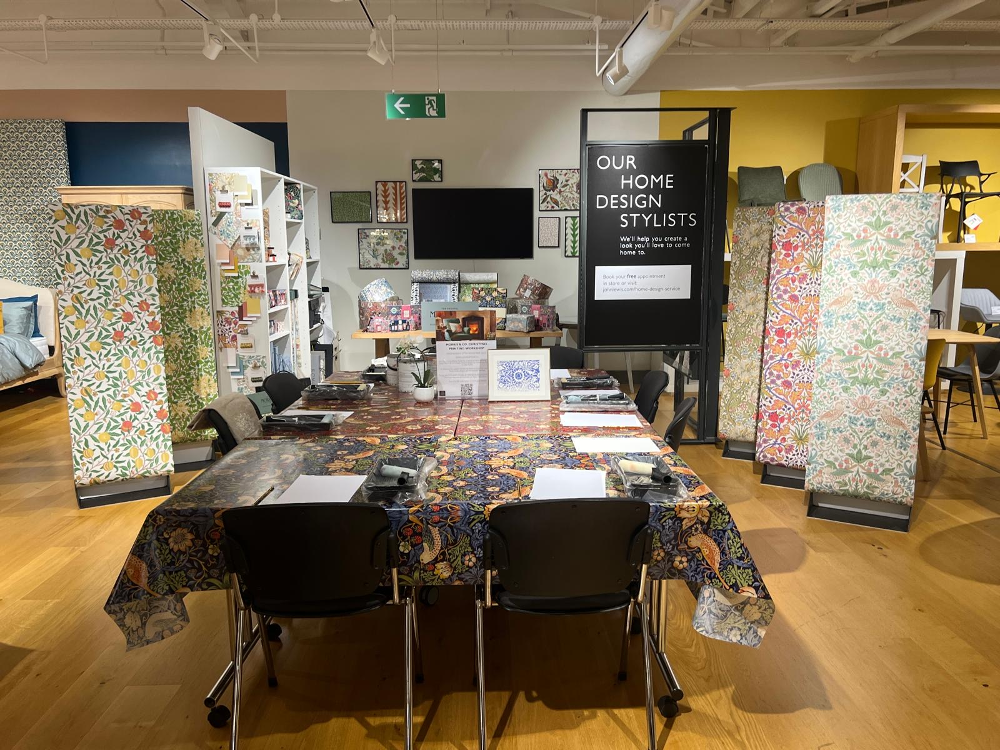
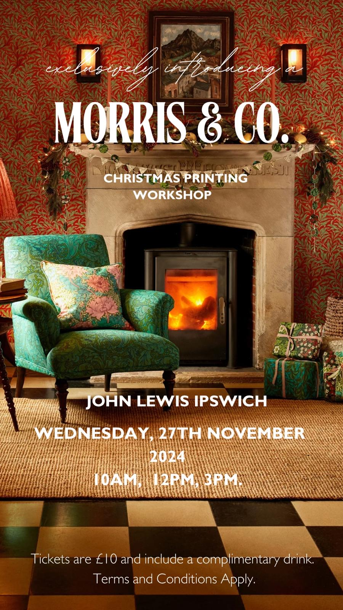
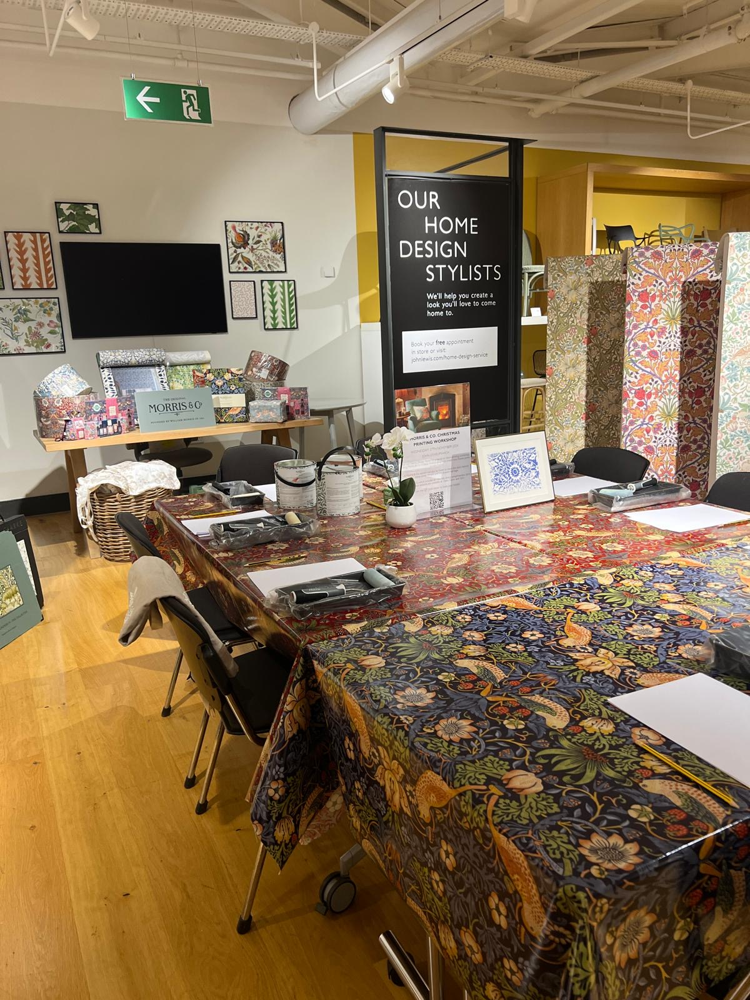
27 November 2024 · John Lewis Ipswich
Morris & Co Christmas Printing Workshop
Ticketed in-store workshop event in partnership with Morris & Co, coordinating three sessions at 10AM, 12PM and 3PM. Guests designed and printed their own Christmas items using Morris & Co's iconic Strawberry Thief and Pimpernel patterns. Tickets £10 including a complimentary drink.

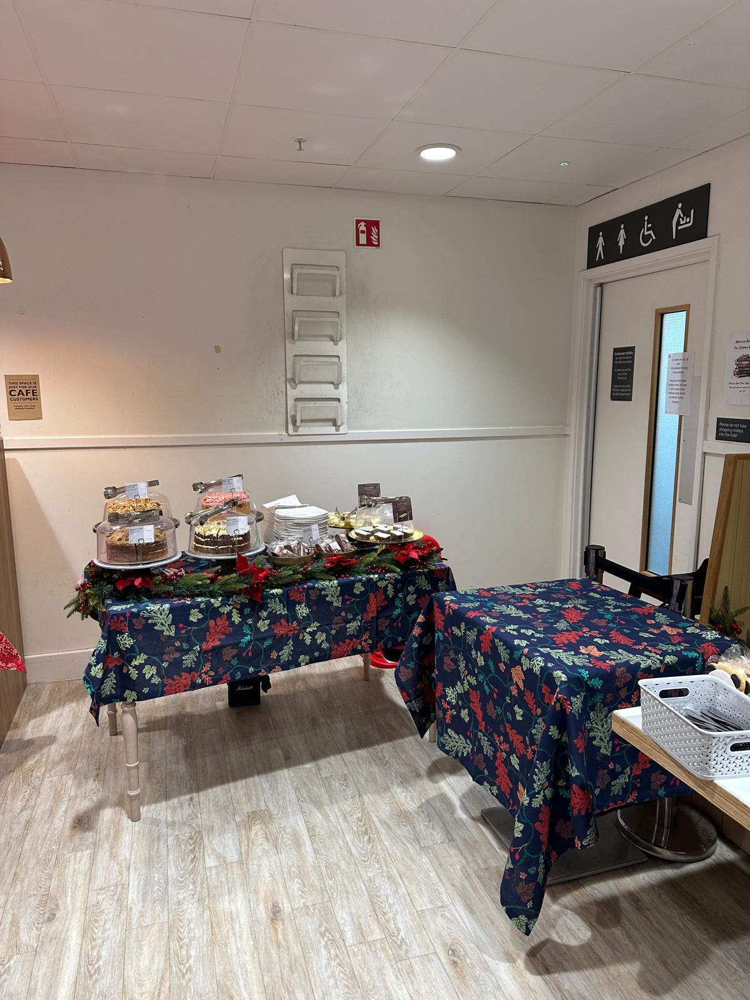
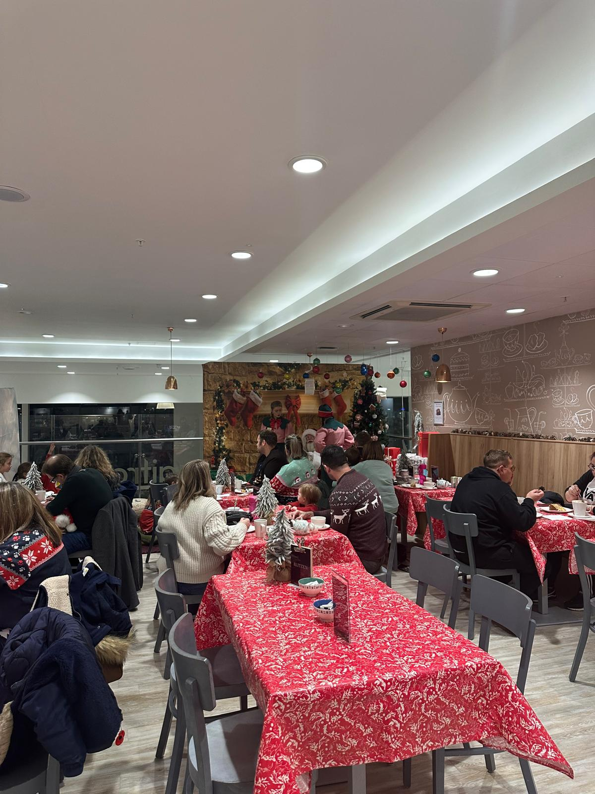
2024 · John Lewis Ipswich
Santa's Tea Party 2024
Seasonal in-store event bringing families together with a festive tea party experience, coordinating the event programme, vendor liaison, product curation, and on-the-day operations.
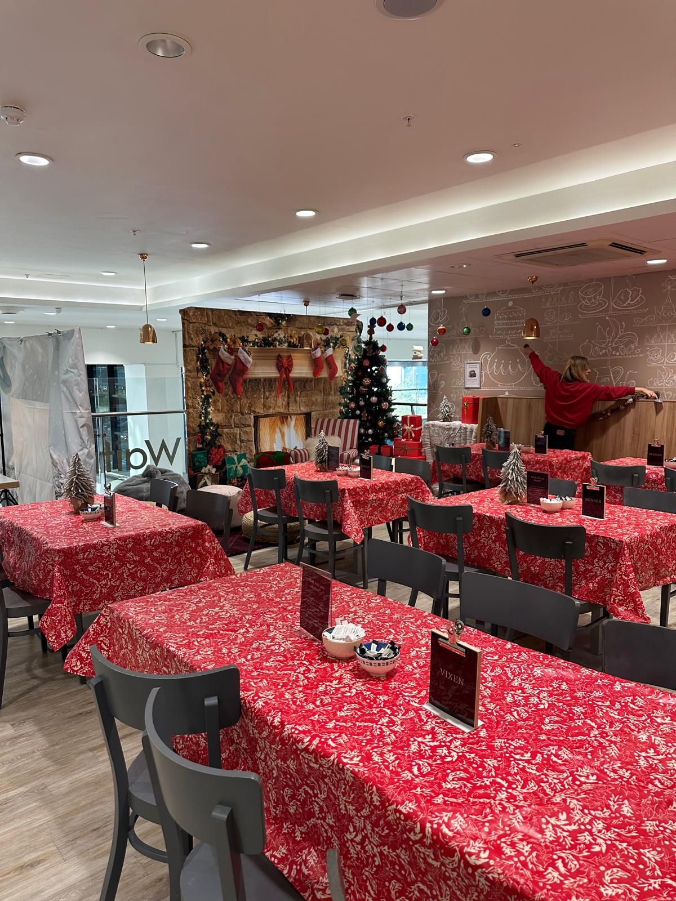
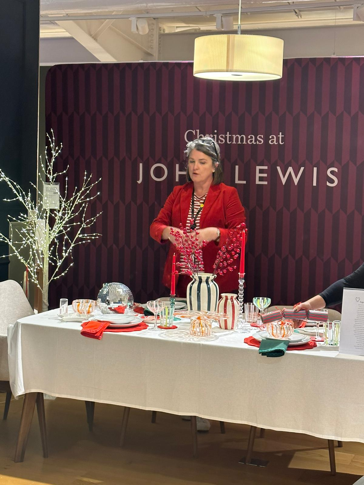

2024 · John Lewis Ipswich
Christmas Tablescaping 2024
Customer event showcasing John Lewis's festive tableware and home collections through a live tablescaping demonstration, coordinating the event space, product selection, styling, and full customer experience.
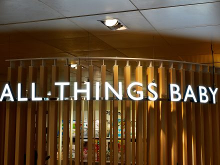
Photo: Sabina Weston / Drapers
John Lewis Ipswich · Nursery Department
Baby & Nursery Events
Coordinating appointment scheduling, vendor liaison, and event delivery across the baby and nursery department — managing supplier demonstrations, customer consultations, and compliance paperwork throughout the year.